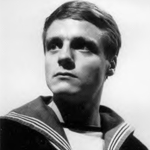

|
| cf
Ben Jackson
After receiving a sixth-month shore-posting, cockney sailor Ben Jackson meets Polly in the Inferno nightclub. He quickly becomes embroiled in the First Doctor’s attempts to foil WOTAN’s War Machines.
Sneaking into the TARDIS with Polly, Ben finds himself fighting Daleks, Macra, Cybermen and the faceless Chameleons. Witnessing the Doctor’s first regeneration, Ben is initially skeptical and slow to trust the Second Doctor – only believing when the Doctor is recognised by a Dalek. Returning to Earth on the day they left in 1966, the Doctor seems to think Ben will become an Admiral.
|